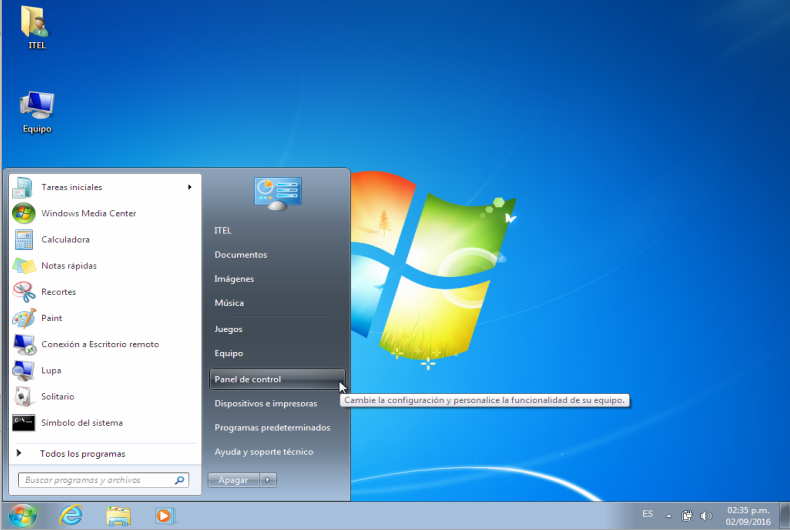
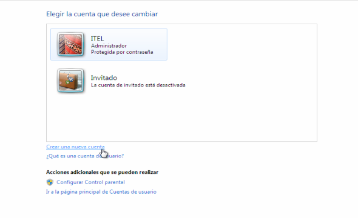
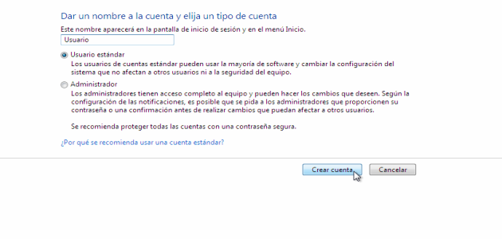

Gestión de usuarios¶
Para compartir carpetas entre equipos con Windows y GNU/Linux, tendremos que configurar usuarios en ambos sistemas.
Sobre los usuarios
Es recomendable, aunque no excluyendete, disponer de los mismos usuarios tanto en el servidor SAMBA, como en Windows para un correcto funcionamiento del servicio.
Creación de usuarios en GNU/Linux¶
A continuación, repasaremos el modo de creación de usuarios en GNU/Linux:
sudo adduser usuario
Donde usuario es el nombre de usuario que deseamos crear. El mismo nombre de usuario debe existir en Windows. Recordar que en GNU/Linux, los nombres de usuario son sensibles a letras mayúsculas y minúsculas.
Creación de grupos en GNU/Linux¶
Cuando creamos un usuario en GNU/Linux, automáticamente el sistema crea un grupo con el mismo nombre que el usuario. Sin embargo, podemos agregar los grupos que querramos de la siguiente manera:
sudo addgroup nuevoGrupo
Donde nuevoGrupo es el nombre de grupo que deseamos crear.
Agregando usuarios a un grupo en GNU/Linux¶
Podemos modificar o agregar los grupos a los que pertenece el usuario de la siguiente manera:
sudo usermod -G grupo1,grupo2 usuario
Donde usermod es el comando para agregar al usuario llamado usuario a los grupos grupo1 y grupo2
Gestionando usuarios y grupos de manera simultánea
Es posible crear un usuario y agregarlo a un grupo determinado por nosotros, de manera simultánea:
sudo useradd usuario -m -G users
Pero si usamos este método, deberemos configurar la contraseña del usuario en un segundo paso:
sudo passwd usuario
Verificando a que grupos pertenece un usuario en GNU/Linux¶
Para verificar el/los grupo/s a los que pertenece el usuario, ejecutamos:
sudo id usuario
Donde usuario, es el usuario que deseamos investigar.
Agregando usuarios al servidor SAMBA¶
Los usuarios ya fueron creados en GNU/Linux. Sólo resta agregarlos al servidor SAMBA de la siguiente manera:
sudo smbpasswd -a usuario
Donde usuario es el usuario al que deseamos agregar a SAMBA. El sistema nos solicitará la contraseña del usuario en SAMBA que deberá ser la misma que en Windows.
Creación de usuario en Windows 7¶
Para el correcto funcionamiento de SAMBA es recomendable que existan en Windows los mismos usuarios que en el servidor de compartición. En otro tutorial se explica como crear y gestionar los usuarios en GNU/Linux. A continuación, se detallan los pasos para la creación de usuarios en Windows 7.
Paso 0¶

Paso 1¶

Paso 2¶

Paso 3¶

Paso 4¶

Paso 5¶

Paso 6¶

Sobre la creación de usuarios en Windows
GNU/Linux es un sistema case sensitive, es decir, discrimina las mayúsculas de las minúsculas. Por ejemplo, juan y Juan son vistos por el sistema como dos usuarios diferentes. Hay que tener en cuenta este punto al crear los usuarios en Windows, ya que deberán llamarse de igual manera que en el servidor GNU/Linux.